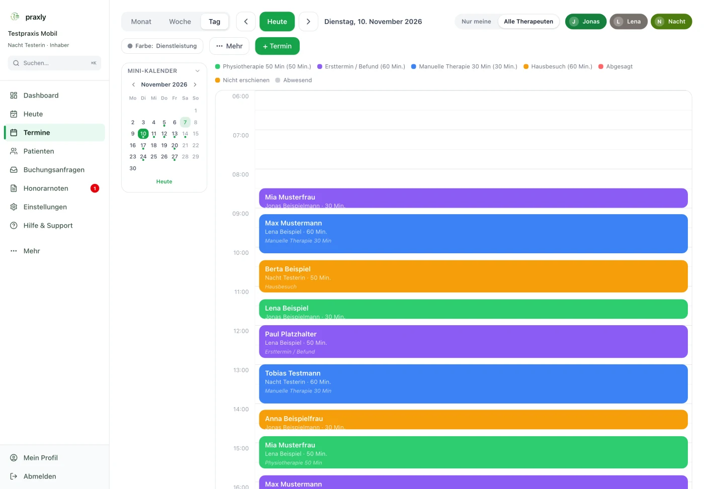
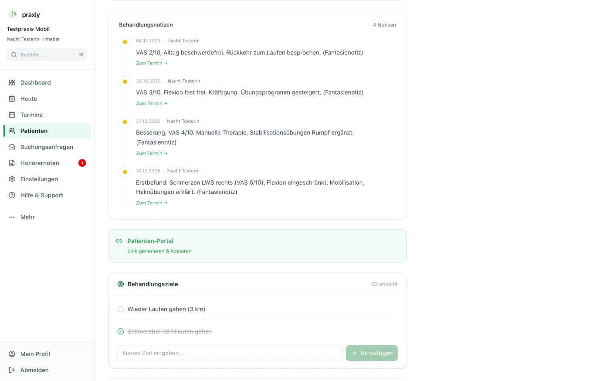
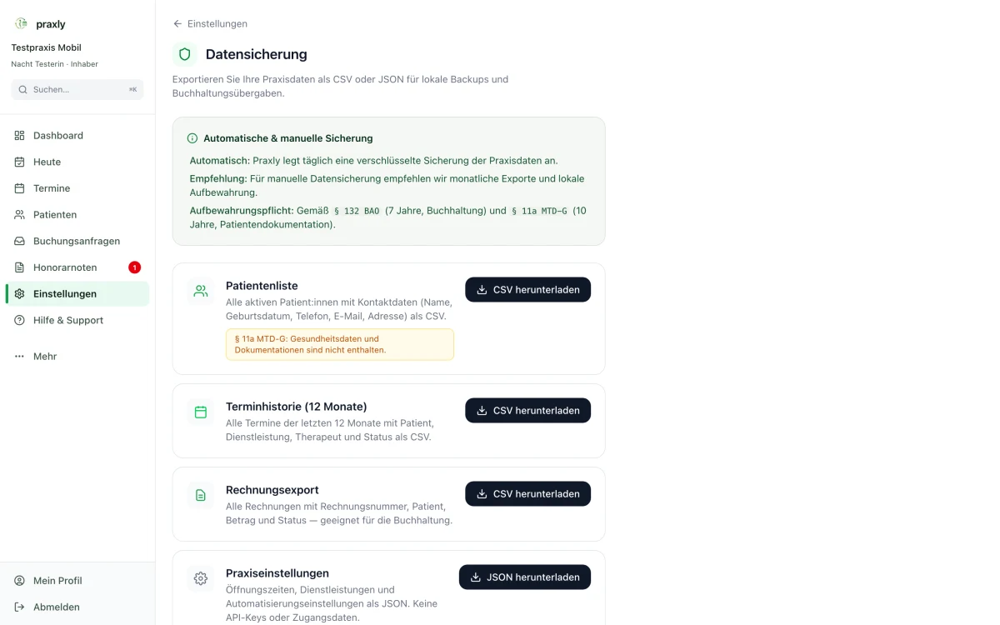

Weniger Verwaltung. Mehr Zeit für deine Patient:innen.
Praxissoftware für Physio, Ergo, Logo und Heilmassage in Österreich
Honorarnoten für die Kostenerstattung, Kalender mit Online-Buchung, Dokumentation und Erinnerungen – eine Software im Browser für Wahltherapeut:innen in Österreich.
ohne Karte, monatlich kündbar

Eine Software für den ganzen Praxis-Ablauf.
Von der ersten Buchung bis zur Honorarnote.
Termine und Online-Buchung
- Online-Terminbuchung 24/7Patient:innen buchen selbst, ohne Login und ohne Anruf. Mehr dazu
- Kalender & TermineEinzel- und Serientermine mit Konfliktprüfung und Therapeutenfilter.
- Automatische ErinnerungenPer E-Mail, optional ein zweites Mal – weniger Ausfälle.
- Warteliste & AbsagenWird ein Termin frei, ist die Warteliste sofort zur Hand.
- Wartezimmer & Check-inCheck-in per QR-Code, im Wartezimmer siehst du, wer schon da ist.



Patientenakte und Honorarnote
- PatientenverwaltungKontaktdaten und komplette Terminhistorie an einem Ort.
- Digitaler AnamnesebogenPer Link ausfüllen, mit Unterschrift und Einwilligung.
- Dokumentation & VerordnungenBehandlungsdokumentation mit 5 fertigen Vorlagen und Verordnungsverwaltung.
- HonorarnotenPDF mit den Angaben, die die ÖGK für die Kostenerstattung nennt – Patient:innen reichen den Beleg selbst ein.
- Zahlungen & MahnwesenOffene Honorarnoten, Mahnungen, Kassenbuch mit Tagesabschluss und Einnahmen-Ausgaben-Export. Kein Ersatz für eine Registrierkasse.
- Gemeinschaftspraxis & TeamGemeinsamer Kalender, Honorarnoten im Namen selbständiger Therapeut:innen, Rollen für Inhaber:in, Therapeut:in und Empfang.
- Kurse, Recall & StatistikGruppenkurse verwalten, Patient:innen wieder einladen, Auslastung und Umsatz im Blick.


Für Wahltherapeut:innen in Österreich.
Für Solo-Praxen und Teams – wähle deinen Beruf.
Ich bin Physiotherapeut:in
Termine, Honorarnoten für die Kostenerstattung und Dokumentation in einer Software. Mehr für Einzelpraxen
Ich bin Ergo- oder Logopäd:in
Dieselbe Software für Ergotherapie und Logopädie: Kalender, Online-Buchung, Doku und Honorarnoten. Mehr dazu
Ich bin Heilmasseur:in
Termine, Erinnerungen und Honorarnoten für deine Klient:innen, auch am Handy. Mehr dazu
Ihr seid mehrere? Praxly für Gemeinschaftspraxen
In drei Schritten startklar.
Kostenlos registrieren
Praxisname, dein Name, E-Mail und Passwort – fertig. Kein Gespräch, keine Kreditkarte, kein Warten.
Praxis einrichten
Der Einrichtungs-Assistent führt dich in 5 Schritten bis zur ersten Honorarnote. Jeder Schritt lässt sich überspringen.
Im Alltag loslegen
Termine, Erinnerungen, Honorarnoten – alles läuft. Nach den 14 Tagen entscheidest du, ob du weitermachst.
Deine Patientenliste liegt in Excel oder CSV? Der Datenumzug ist kostenlos und läuft über die App. Umzug zu Praxly
Ein Preis. Alles inklusive. Monatlich kündbar.
Keine Einrichtungsgebühr, keine Mindestlaufzeit.
ohne Karte, monatlich kündbar
| Preis | € 149 /Monat Endpreis · für 1–5 Therapeut:innen Kein Ausweis der Umsatzsteuer (Kleinunternehmerregelung gem. § 6 Abs. 1 Z 27 UStG). |
|---|---|
| Test | 14 Tage kostenlos testen, keine Karte nötig |
| Enthalten |
|
| Nicht enthalten |
|
| Kündigung | Formlos per E-Mail oder im Kundenkonto, wirksam zum Ende des Abrechnungsmonats. Danach kannst du deine Daten noch 30 Tage exportieren. So läuft der Test |
Für Zentren mit mehr Therapeut:innen gibt es ein individuelles Angebot: Für Zentren
Gegründet in Vorarlberg. Sorgfältig mit Gesundheitsdaten.
Mehr dazu: Datenschutzerklärung · AGB · Ratgeber: Datenschutz in der Physiopraxis

- Daten
- in der EU (Frankfurt)
- Übertragung
- verschlüsselt (HTTPS)
- Vertrag
- Auftragsverarbeitungsvertrag nach Art. 28 DSGVO direkt in der App – AVV ansehen
- Trennung
- Jede Praxis sieht nur ihre eigenen Daten; Rollen regeln den Zugriff im Team
- Deine Daten
- Export jederzeit, nach Kündigung noch 30 Tage
- Löschung
- Auf Wunsch der Praxis werden die Daten innerhalb von 30 Tagen nach Vertragsende gelöscht. Gesetzliche Aufbewahrungspflichten bleiben unberührt.
- Dienstleister
- offen aufgelistet in der Datenschutzerklärung der App
Alles, was du vor dem Start wissen willst.
Mehr Wissen für deinen Praxisalltag – Honorarnote, Verordnung, Kostenerstattung, Datenschutz: zum Ratgeber
Start
Brauche ich eine Kreditkarte?
Was passiert nach den 14 Tagen?
Muss ich etwas installieren?
Für welche Berufsgruppen ist Praxly gedacht?
Können bestehende Daten übernommen werden?
Wie funktioniert der Support?
Reicht Praxly die Honorarnoten bei der ÖGK ein?
Ist Praxly eine Registrierkasse?
Preis
Wie viel kostet Praxly?
Was ist im Preis enthalten?
Gibt es eine Mindestlaufzeit?
Kann der Preis später steigen?
Daten
Wo liegen meine Daten?
Wer sieht die Patientendaten?
Was passiert mit meinen Daten, wenn ich kündige?
14 Tage kostenlos testen – ohne Risiko.
Registriere deine Praxis kostenlos. Keine Mindestlaufzeit, kein Gespräch nötig.
ohne Karte, monatlich kündbar
Fragen? Schreib dem Praxly-Team.
Schriftlich per E-Mail oder WhatsApp – Antwort meist am selben Tag. Praxly wurde in Vorarlberg gegründet.
Bitte sende über WhatsApp keine Gesundheits- oder Patientendaten. Hinweise zum Datenschutz: Datenschutzerklärung.
Ehrlich gesagt: Praxly ist neu am Markt und wird laufend weiterentwickelt – dein Feedback aus dem Praxisalltag fließt direkt ein.